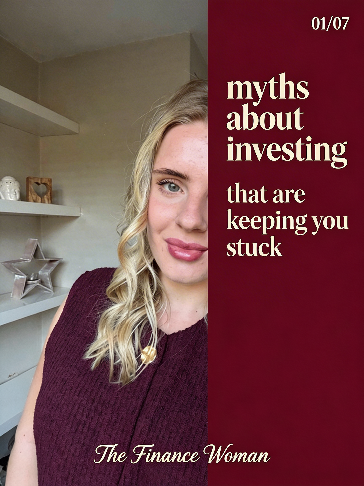
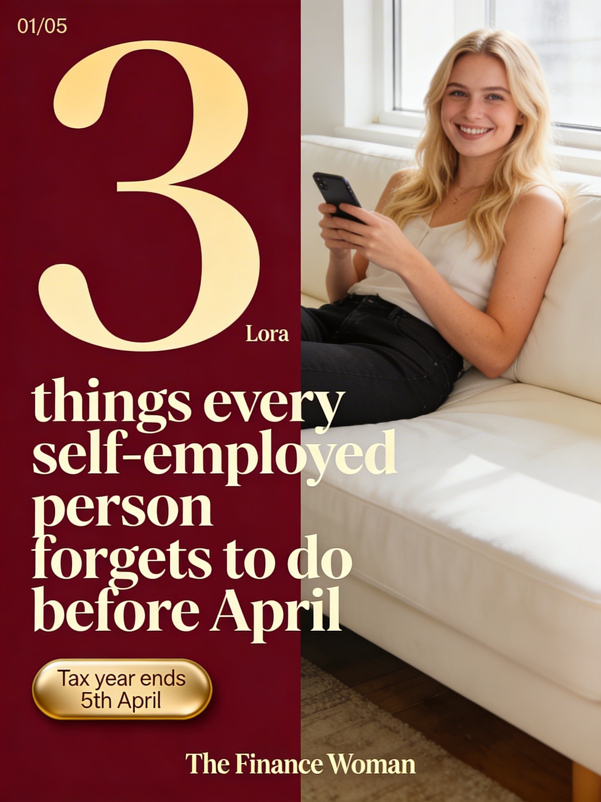
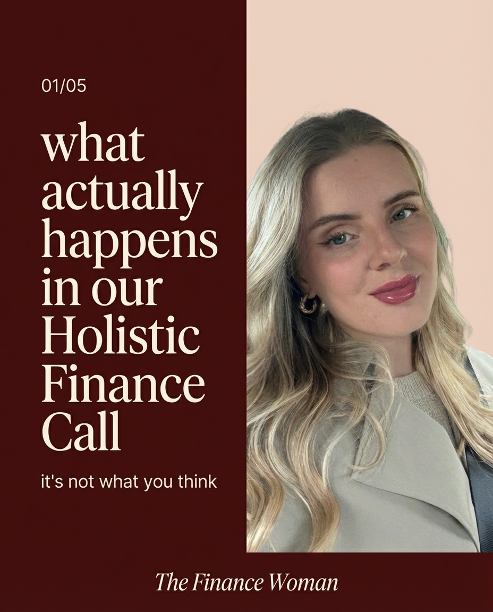
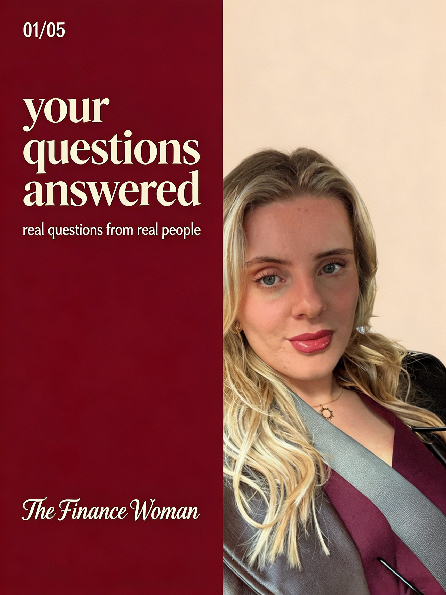

5 Instagram Carousels — Final Designs with Captions
Carousel 1 of 5 · 7 slides
Myths About Investing
Save-worthy · High share potential

01/07
Myths about investing (that are keeping you stuck)
Swipe to find out →
The Finance Woman
02/07Myth01The Finance Woman
Myth
"I need a lot of money to start investing"
Fact
Consistency matters way more than the starting amount.
→
03/07Myth02The Finance Woman
Myth
"Investing is basically gambling"
Fact
Long-term investing is about patience, not luck.
→
04/07Myth03The Finance Woman
Myth
"Cash is the safest place for my money"
Fact
Inflation quietly erodes it over time.
→
05/07Myth04The Finance Woman
Myth
"I'm too late — I should have started years ago"
Fact
Starting today still changes your future.
→
06/07Myth05The Finance Woman
Myth
"Pensions lock your money away forever"
Fact
They're one of the most tax-efficient tools available.
→
07/07
The biggest risk isn't getting it wrong.
It's never starting at all.
Free call — link in bio →
The Finance Woman
1 / 7
Caption — click to copy
Myths about investing that are keeping people stuck.
Which one have you believed? (Be honest)
"I need loads of money to start" — Nope. Consistency beats size.
"It's basically gambling" — Not even close. Patience, not luck.
"Cash is safest" — Inflation says otherwise.
"I'm too late" — Starting today still changes everything.
"Pensions lock your money away" — They're actually one of the best tax tools going.
The biggest risk isn't getting it wrong. It's never starting at all.
If any of these myths have been holding you back — let's talk.
Free call — link in bio.
#investing #pensions #myths #selfemployed #financialplanning #thefinancewoman
The value of pensions and investments and the income they produce can fall as well as rise. You may get back less than you invested. The benefits to the treatment of tax will depend on your individual circumstances and may be subject to change in future. Past performance is not indicative of future results.
Click caption to copy
Carousel 2 of 5 · 5 slides
3 Things Before April
Timely · Post before 5th April

01/05
3 things every self-employed person forgets to do before April
Tax year ends 5th April
The Finance Woman
02/05Thing01The Finance Woman
Check your pension contributions
You get tax relief on pension contributions up to your annual allowance. If you haven't used it — you lose it when the tax year ends.
Use it or lose it.
→
03/05Thing02The Finance Woman
Review your income protection
If your income has changed this year, your cover might not match what you actually need. A quick review takes 10 minutes.
When did you last check?
→
04/05Thing03The Finance Woman
Use your ISA allowance
You get £20,000 tax-free ISA allowance every year. It doesn't roll over. April 5th hits and it's gone.
Don't leave free tax relief on the table.
→
05/05
Need help getting sorted before April?
Free call — link in bio →
The Finance Woman
1 / 5
Caption — click to copy
Tax year ends 5th April. Here are 3 things most self-employed people forget to do before then:
1. Check your pension contributions — you get tax relief, but you lose it if you don't use it before April.
2. Review your income protection — if your income has changed, your cover might not match anymore. Takes 10 minutes to check.
3. Use your ISA allowance — £20,000 tax-free. It doesn't roll over. Gone on 6th April.
Save this post and come back to it before the deadline.
Need help getting any of these sorted? Free call — link in bio.
#taxseason #selfemployed #pension #ISA #financialplanning #taxplanning #thefinancewoman
The value of pensions and investments and the income they produce can fall as well as rise. You may get back less than you invested. The benefits to the treatment of tax will depend on your individual circumstances and may be subject to change in future. ISA allowance correct as of 2025/26 tax year.
Click caption to copy
Carousel 3 of 5 · 5 slides
What Happens in Our Call
Trust-builder · Overcomes objections

01/05
What actually happens in our Holistic Finance Call
It's not what you think.
The Finance Woman
02/05SteponeThe Finance Woman
We talk about you
Your life, your goals, what keeps you up at night. No spreadsheets. No jargon. Just a proper conversation about what matters to you.
→
03/05SteptwoThe Finance Woman
We look at the numbers
What you earn, what you spend, what you've got in place. I'll help you see the full picture — clearly and without any pressure.
→
04/05StepthreeThe Finance Woman
You leave feeling calm and in control
With clear next steps, a plan that makes sense, and the confidence that you're heading in the right direction.
→
05/05
Ready to feel calm about your finances?
Book your free call →
The Finance Woman
1 / 5
Caption — click to copy
What actually happens in our Holistic Finance Call? (It's not what you think.)
Step 1: We talk about you.
Not numbers. You. Your life, your goals, what keeps you up at night.
Step 2: We look at the full picture.
Income, outgoings, what's in place, what's missing. Clearly and without pressure.
Step 3: You leave feeling calm and in control.
With clear next steps and a plan that actually makes sense for your life.
No hard sell. No jargon. Just a proper conversation.
Book your free call — link in bio.
#financialplanning #holisticfinance #selfemployed #financialadviser #thefinancewoman
Click caption to copy
Carousel 4 of 5 · 5 slides
This or That — Financial Edition
Engagement driver · Interactive
01/05
This or That?
Financial edition. There's a right answer — but it might surprise you.
The Finance Woman
02/05
Pay off your mortgage early
Put more into your pension
or
→
03/05
Get life insurance first
Get income protection first
or
→
04/05
Save into an ISA
Save into a pension
or
→
05/05
The real answer?
It depends entirely on you.
Your age, your income, your goals, your family. There's no one-size-fits-all — and that's exactly why getting advice matters.
Let's figure it out — link in bio →
1 / 5
Caption — click to copy
This or That — financial edition.
Mortgage vs pension?
Life insurance vs income protection?
ISA vs pension?
Before you answer — swipe through.
The truth is, there's no one-size-fits-all answer. It depends on your age, your income, your family, and your goals.
That's exactly why getting proper advice matters. Because what's right for your mate might not be right for you.
Want to figure out what's right for you? Free call — link in bio.
#financialplanning #thisorthat #pension #mortgage #selfemployed #thefinancewoman
Your home may be repossessed if you do not keep up with repayments on your mortgage. The value of pensions and the income they produce can fall as well as rise. You may get back less than you invested.
Click caption to copy
Carousel 5 of 5 · 5 slides
Your Questions, Answered
Authority builder · FAQ format

02/05You asked...Q1The Finance Woman
"Is it too late to start a pension at 40?"
Absolutely not. Starting at 40 still gives you 20+ years of growth. The best time to start was years ago — the second best time is today.
→
03/05You asked...Q2The Finance Woman
"Do I really need income protection?"
If you're self-employed and your income depends on you being able to work — yes. It's one of the most affordable safety nets you can have.
→
04/05You asked...Q3The Finance Woman
"What's the difference between an ISA and a pension?"
Both are tax-efficient. An ISA is flexible — access anytime. A pension locks in until retirement but gives you tax relief upfront. Most people benefit from both.
→
05/05
Got a question? I'd love to answer it.
Free call — link in bio →
The Finance Woman
1 / 5
Caption — click to copy
Your questions, answered.
These are real questions I get asked all the time:
"Is it too late to start a pension at 40?" — Absolutely not. You've still got 20+ years of growth ahead.
"Do I really need income protection?" — If your income depends on you working, yes. It's one of the most affordable safety nets going.
"What's the difference between an ISA and a pension?" — Both are tax-efficient, but they work differently. Most people benefit from both.
Got a question you want me to answer? Drop it in the comments or send me a DM — I might feature it next time.
Free call — link in bio.
#financialadvice #FAQ #pension #ISA #incomeprotection #selfemployed #thefinancewoman
The value of pensions and investments and the income they produce can fall as well as rise. You may get back less than you invested. The benefits to the treatment of tax will depend on your individual circumstances and may be subject to change in future.